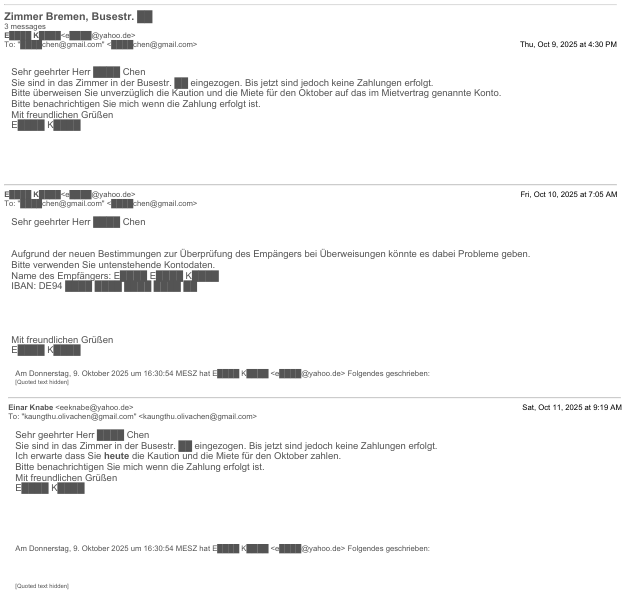
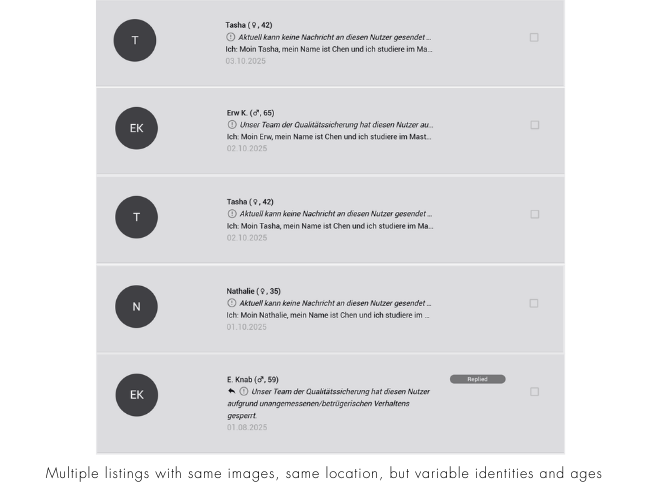
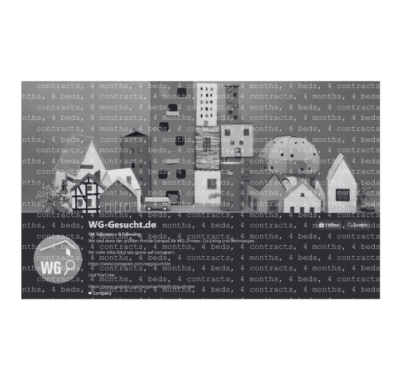
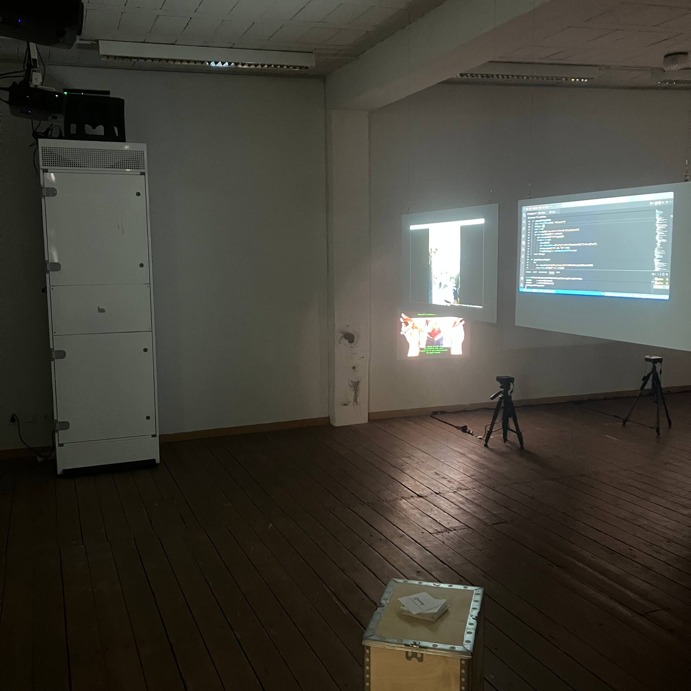
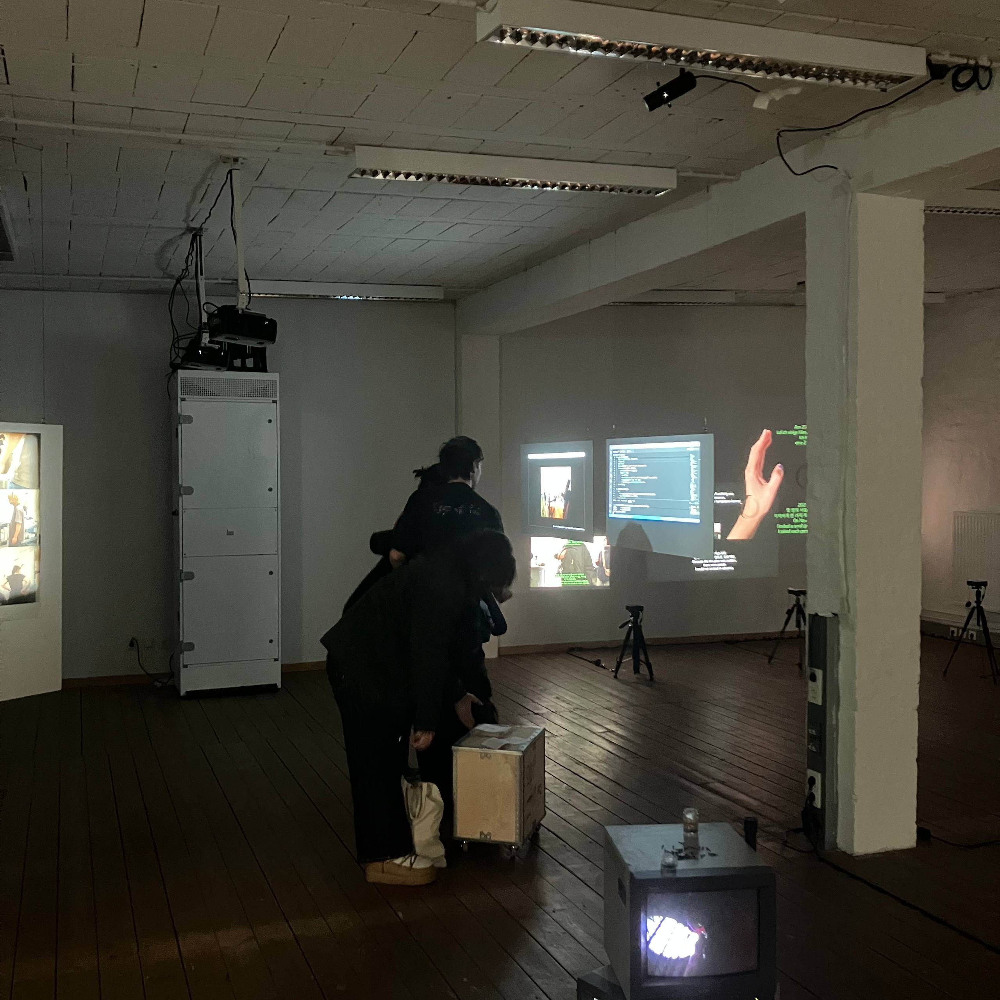
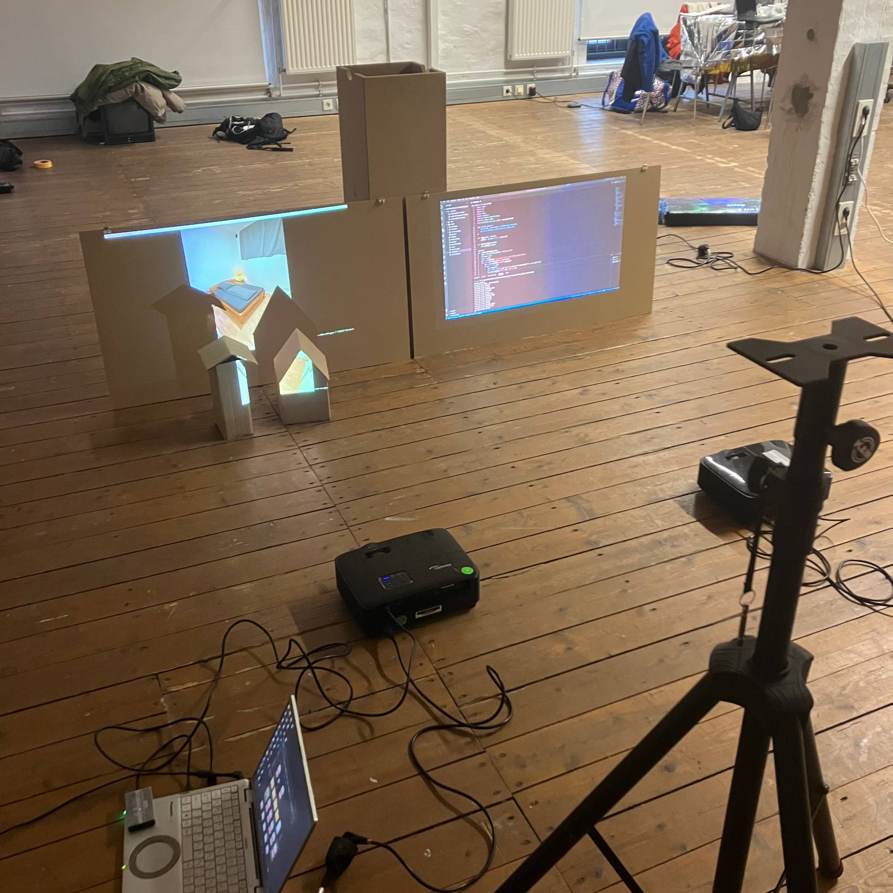

144 Iterations of Temporary Beds

144 Iterations of Temporary Beds is a multi-media installation that documents the precarity of the residential rental market in cities, especially the exhaustion of the WG (shared apartment) search. For 48 hours, a custom Python script refreshes WG-Gesucht.de in a 20 minutes rhythm, archiving the latest 20 listings in Bremen.
These 144 iterations mirror the duration people typically spend non-stop refreshing the site before finally securing a room. This cycle serves as a documentation of my personal experience with the housing market: four months in Bremen, four different rooms, four signed contracts.
The installation loops the archived ads alongside a distorted audio track of a dubious estate agent arrested on the day of my intended move-in. This recording was the prologue to a night spent in a raided house with a broken heater; a physical reality I entered with a key handed to me by a policeman, not a landlord.
[02] A Critique of the Invisible Kings
Platforms such as WG-Gesucht present themselves as neutral Infrastructure: digital bulletin boards for the WG (shared apartment). However, WG-Gesucht is a classic Lean Platform (Srnicek, 2017), which owns no assets, employs no caretakers, and takes no responsibility for the goods exchanged. Instead, they extract rent from the infrastructure of the search itself.
In Stuttgart, the founders of WG-Gesucht, Lysander Mende and Christian Frederik Steim, operate as Invisible Kings (Investment Week, 2024). They have no public face, giving no interviews while their algorithm dominates the German housing market. This invisibility is a feature, not a bug. It allows the platform to profit from the desperation of the housing crisis without ever having to witness the racist Hausmeister or the police raid that their servers host.
The platform performs safety theater. As detailed in "Betrugsmasche auf WG-Gesucht: eine Wohnungssuche in Dortmund" (Kurt digital, 2022), the Quality Assurance of the platform is often dangerously retroactive. The warning message, "User disabled due to fraudulent behavior", typically arrives only after a victim has already shared their passport data or transferred money.
[03] Incident Reports
INCIDENT #01
LOCATION: Heinrich-Gefken Straße ████, 28359 Bremen
DATE: 30/09/2025
SUBJECT: Hausmeister (Caretaker) / R████ F████ (Landlord)
INCIDENT #02
LOCATION: Busestraße ████, 28213 Bremen
DATE: 04/10/2025 – 09/10/2025
SUBJECT: N████ ("Estate Agent") / E████ K████ ("Landlord")


[04] Exhibition
The physical component consists of 3D houses folded from my actual WG contracts and an A4 zine containing a papercraft template. By inviting visitors to fold their own houses and speculate on their ideal spaces, the project critiques the mechanics of platform capitalism and the precarity of the housing market.





The project documents the struggle of an international student on a marketplace where home is a fleeting iteration, and the barriers to entry remain invisible and biased.